1 сентября 2026 года мир хаоса потрясло ужасное землетрясение, в результате которого на побережье северных земель образовался гигантский водоворот, ведущий в неизвестность.
Первые водолазы закрытого мира отважно ринулись исследовать подводные пространства, но встретили решительный отпор ранее неизвестных науке тварей. Тем не менее, первые экспедиции принесли плоды, о которых мы и расскажем.
Бездна представляет из себя многоуровневое подземелье со случайной генерацией объектов на карте. Для входа в бездну потребуется акварит в количестве (уровень персонажа/10).
В дальнейшем планируется увеличение стоимости входа до (уровень персонажа/5) акварита.
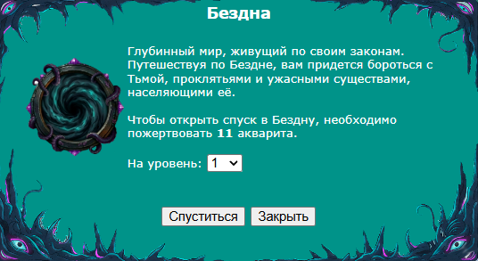
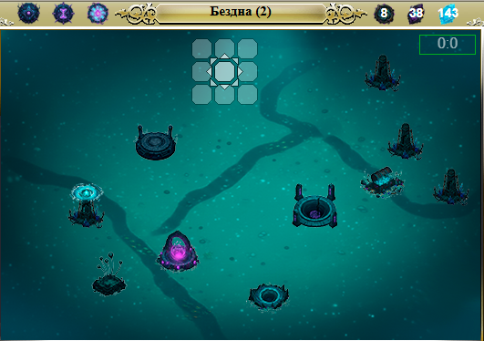
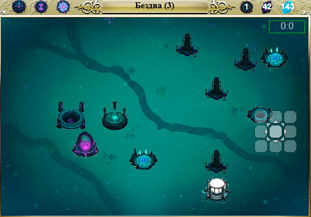
Базовые механики.
Задача водолаза – исследовать один или несколько уровней бездны, изучая подводные руины, борясь с удушающей тьмой и проклятьями, зажигая по пути маяки, чтобы в итоге успешно эвакуироваться через портал, унеся с собой как можно больше околков бездны.
На каждом уровне необходимо проложить путь по карте таким образом, чтобы минимизировать получение тьмы, при этом посетив все маяки и интересующие персонажа объекты. Отображение посещенных персонажем обектов будет изменяться.
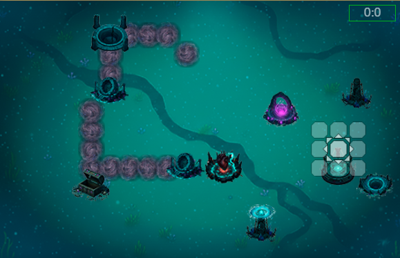
Тьма – базовая механика, похожая на обморожение.
Каждая единица тьмы снижает параметры персонажа в бою на 1%. Она растет с передвижением персонажа по бездне, а также в результате взаимодействия с объектами на карте. Отображается в правом верхнем углу центрального фрейма, а также в подробном окне эффектов.
Снять тьму с персонажа можно только с помощью взаимодействия с конкретными объектами на карте, либо артефактов и апгрейдов атласа.
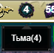
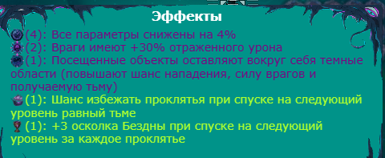
Проклятья – новая базовая механика, уникальная для бездны. Это негативные эффекты, которые всячески мешают передвижению персонажа по бездне. Проклятья накладываются на персонажа при переходе на новый уровень бездны и при взаимодействии с объектами в бездне. Также отображаются в подробном окне эффектов.
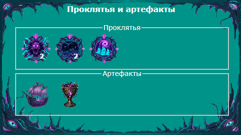
Осколки бездны и осколки эхо – валюта, использующаяся в бездне.
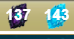
Осколки бездны – ресурс, получаемый в рамках “забега” по бездне в результате взаимодействия с объектами, перехода с уровня на уровень, или в качестве бонуса от конкретных артефактов. За осколки бездны также можно сбрасывать накопившуюся в процессе забега тьму.
Обратите внимание – осколки бездны теряются при гибели персонажа в бездне, а также при выходе из бездны при помощи телепортации.
Осколки эхо – ресурс, получаемый в результате успешного выхода из бездны через портал. Количество получаемых персонажем осколков эхо равняется количеству осколков бездны на момент выхода через портал.
Осколки эхо можно тратить на получение знаний бездны и прокачку атласа бездны, а также на приобретение эхо мастерства в алтаре эхо.
Осколки эхо не теряются между “забегами”.
Эхо мастерства – расходуемый предмет, с помощью которого можно на 90 дней повысить мастерство владения навыком на один вплоть до Грандмастера.
Эхо Мастерства может быть продано на Аукционе.
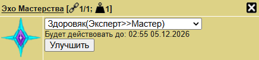

Основные постройки, с которыми обязательно придётся взаимодействовать при спуске в бездну – это обычные маяки, затонувшие маяки, водовороты и порталы.
Затонувший маяк используется как точка сохранения, позволяющая в дальнейшем сразу начать поход с того этажа, на котором такой маяк был активирован.
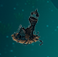
Обычный маяк используется для активации водоворота на уровне.
Водоворот используется для спуска на следующий этаж и активируется после того, как все обычные маяки на уровне были зажжены.
Портал используется как точка безопасного выхода из бездны. Позволяет забрать с собой все заработанные осколки бездны, которые при выходе конвертируются в осколки эхо.
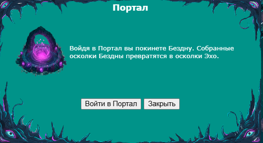

Опциональные постройки, взаимодействие с которыми необязательно для спуска, но может значительно повлиять на геймплей.
Алтарь эхо. Позволяет приобрести эхо мастерства за 100 осколков эхо. Если у персонажа нет при себе 100 осколков эхо, даёт немного осколков бездны.
Обратите внимание – на данный момент при активации алтаря эхо нет подтверждения о покупке. Таким образом, в инвентарь сразу добавится столько эхо бездны, на сколько у персонажа хватает осколков. Так что рекомендуется обходить алтарь эхо стороной, если у вас 100+ осколков, которые вы хотите потратить иначе.
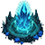
Сердце бездны. Позволяет сразиться с очень сильным стражем сердца бездны. В случае победы персонаж может выбрать: Получить артефакт, снять всю тьму, снять 2 проклятия, получить некоторое количество осколков бездны.
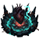
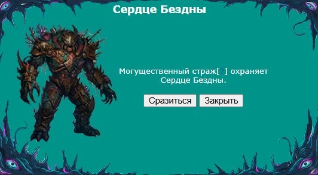
Алтарь бездны. Позволяет покупать очки знаний для атласа бездны за осколки эхо.
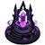
Мерцающие огни. При взаимодействии случайно происходит одно из четырех событий: снимает с персонажа некоторое количество тьмы, снимает с персонажа проклятье, накладывает на персонажа проклятье, даёт немного осколков бездны.
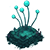
Алтарь воды. Даёт персонажу немного акварита.
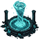
Алтарь проклятых. Позволяет выбрать: Получить с 75% шансом случайный артефакт, снять случайное количество тьмы, либо получить случайное количество осколков бездны. В любом из выбранных вариантов накладывает на персонажа проклятье.
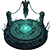
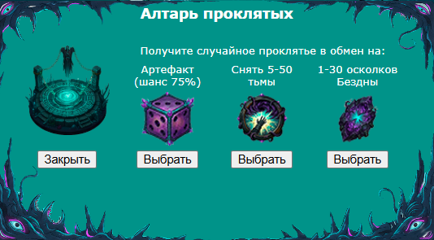
Алтарь очищения. Снимает с персонажа одно случайное проклятье.
Колодец тьмы. Позволяет снять тьму за осколки бездны, либо получить осколки бездны, наложив на персонажа такое же количество тьмы.
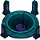
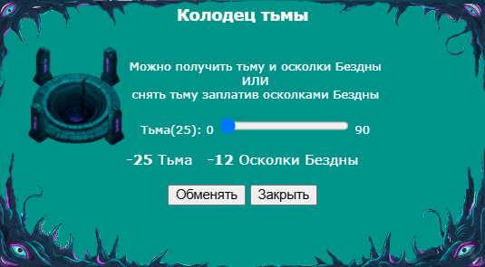
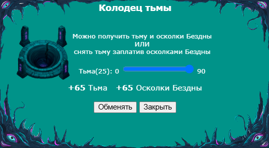
Затонувшее сокровище. Позволяет получить артефакт. В дальнейшем при апгрейде атласа может давать на выбор 1 из 2 или 3 артефактов.
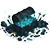
Жертвенный алтарь. Позволяет начать бой, в котором убитые монстры с вероятностью 50% дропают немного осколков бездны. Сам алтарь неуязвим, бой завершается спустя некоторое время после того как игрок самостоятельно выберет завершить бой с помощью отдельной кнопки.
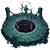
Свет в глубине. Снимает приблизительно 50% тьмы с персонажа.
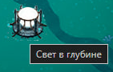
Кристалл бездны. Даёт немного осколков бездны.

Атлас бездны.
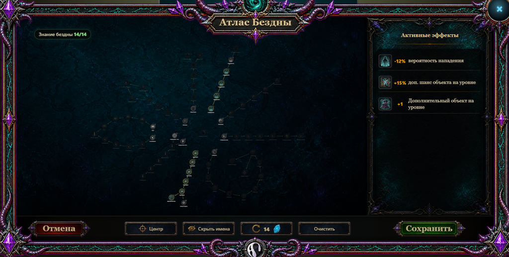
Атлас бездны представляет собой большое дерево навыков (знаний бездны). Знания бездны приобретаются за осколки эхо в алтаре бездны. Первое очко знаний стоит 100 осколков эхо, все дальнейшие – чуть дороже.
Атлас позволяет модифицировать забеги в бездну таким образом, чтобы встречать больше объектов, получать меньше тьмы, больше осколков, уменьшать частоту нападений, а также немного уменьшать количество противников в бою или их здоровье.
Это пока всё, что удалось выяснить исследователям. В дальнейшем, возможно, будет более подробно рассказано о проклятиях, артефактах и иных секретах бездны.